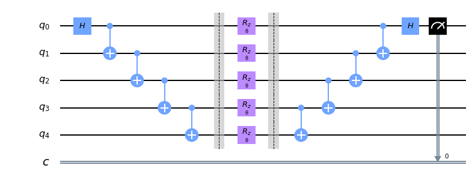
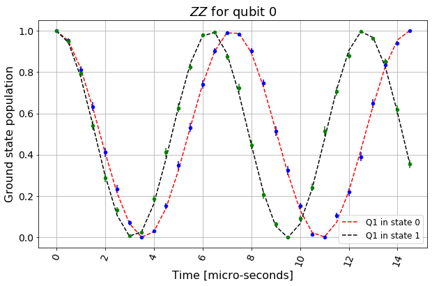

Tutorials¶ Introductory¶ Qiskit warmup An introduction to Qiskit and the primary user workflow. Quantum circuits¶ Circuit Basics Getting Started with Qiskit Οπτικοποίηση Qiskit Summary of Quantum Operations Σεμινάρια Κυκλωμάτων Advanced circuits¶  Advanced Circuits Operators Visualizing a Quantum Circuit Transpiler Passes and Pass Manager Pulse gates Building Pulse Schedules Using the Scheduler Obtaining information about your backend Qiskit Aer: Pulse simulation of two qubits using a Duffing oscillator model Qiskit Aer: Pulse simulation of a backend model Προηγμένα Σεμινάρια Κυκλωμάτων Classical simulators¶ Simulators Device backend noise model simulations Building Noise Models Applying noise to custom unitary gates Noise Transformation The Extended Stabilizer Simulator Matrix product state simulation method Σεμινάρια Προσομοιωτή Υψηλής Απόδοσης Quantum system error analysis¶  Hamiltonian and Gate Characterization Relaxation and Decoherence Measurement Error Mitigation Randomized Benchmarking Quantum Volume Repetition Codes Accreditation protocol Quantum Tomography Entanglement Verification Σεμινάρια Ανάλυσης Σφαλμάτων των Quantum System Algorithms¶ Μια εισαγωγή στους αλγόριθμους του Qiskit Monitoring VQE convergence VQE on Aer simulator with noise Advanced VQE usage Quantum Approximate Optimization Algorithm Grover’s Algorithm and Amplitude Amplification Grover’s algorithm examples Shor’s algorithms Iterative Quantum Phase Estimation Algorithm Σεμινάρια Αλγορίθμων Operators¶ Operator Flow Qiskit Gradient Framework Operators Tutorials Sample algorithms in Qiskit¶ Iterative Quantum Phase Estimation Algorithm Textbook algorithms in Qiskit